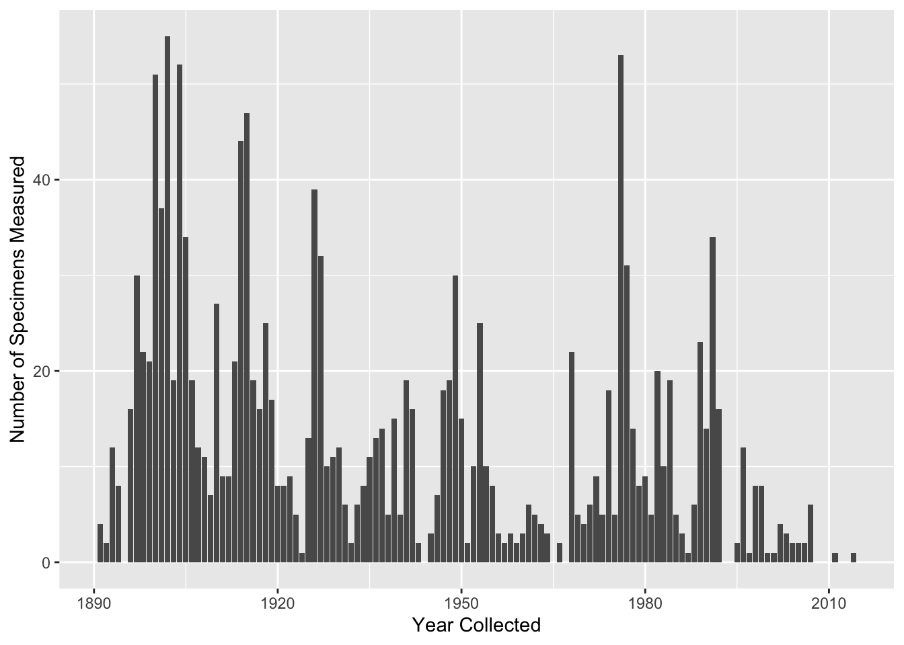
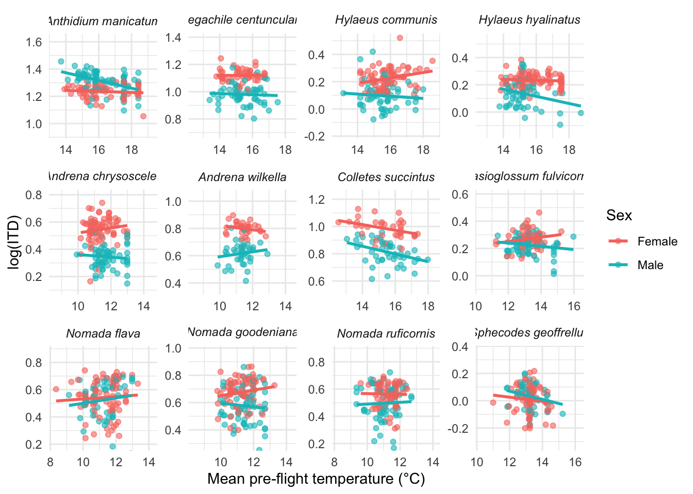
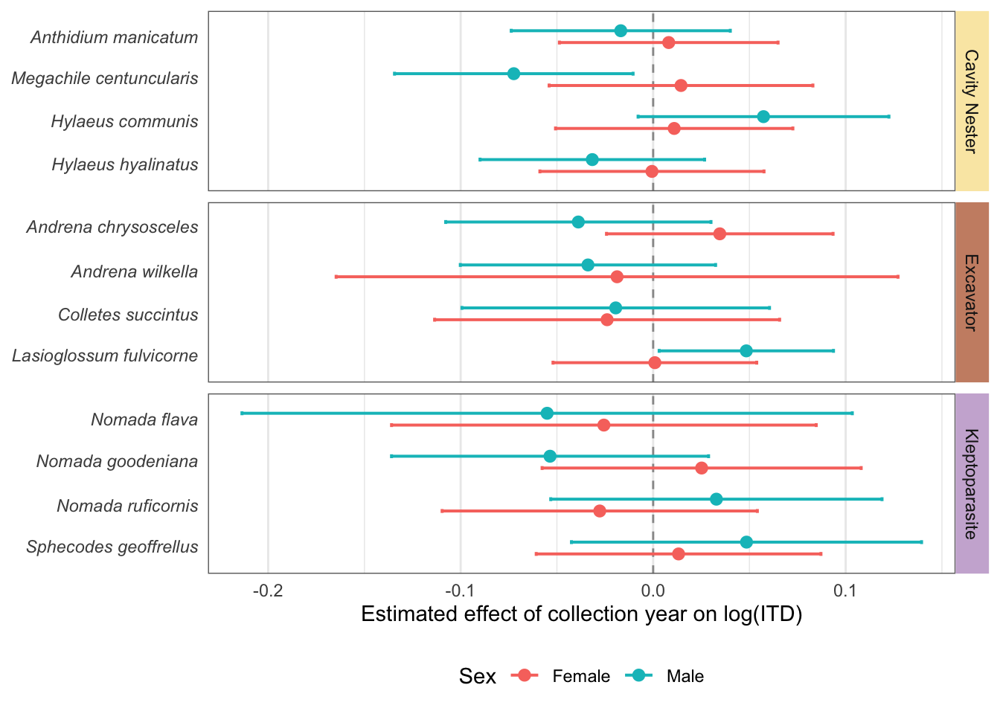
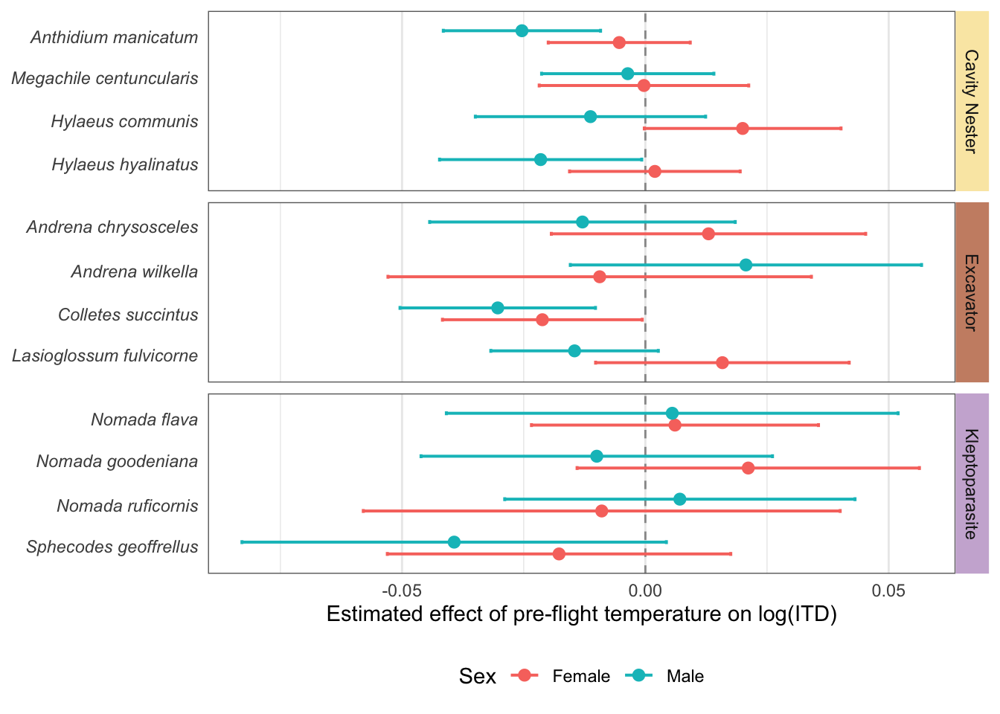
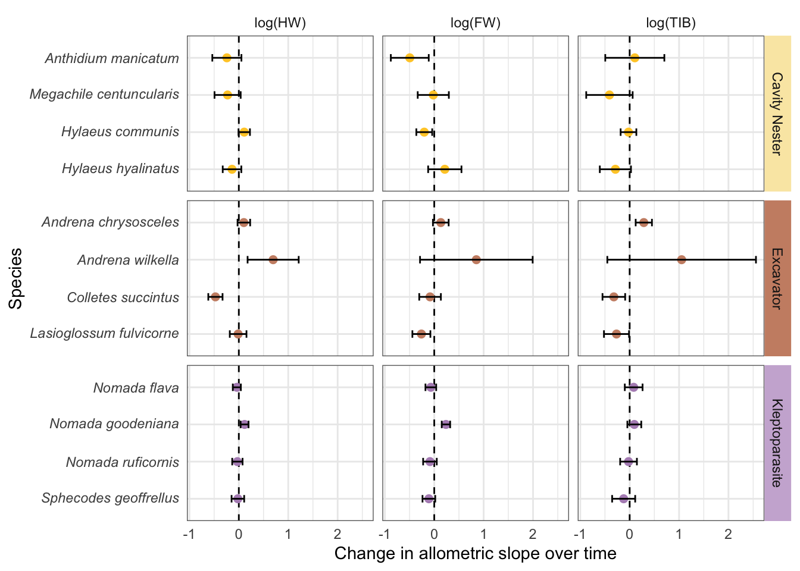
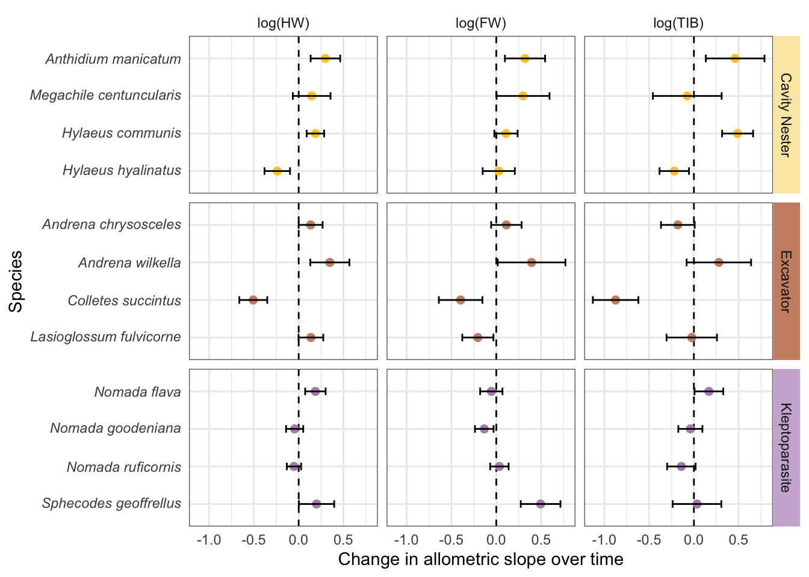
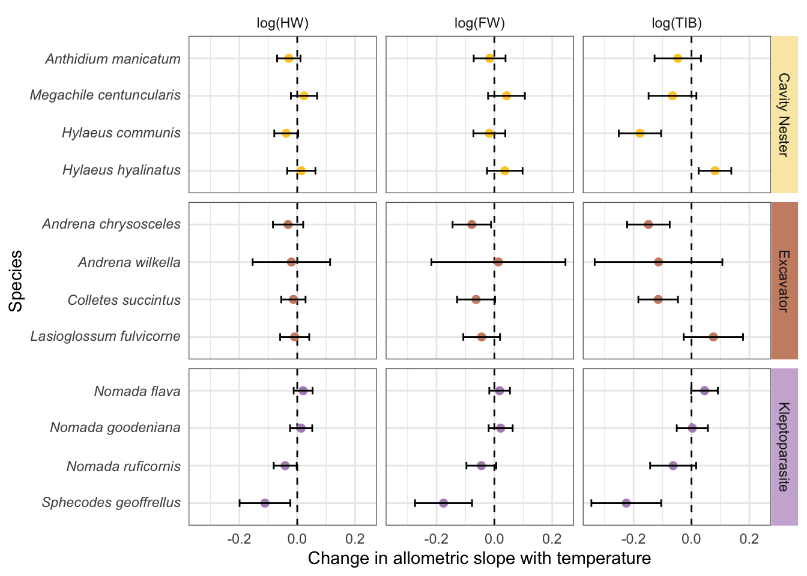

── Conflicts ────────────────────────────────────────── tidyverse_conflicts() ──
✖ dplyr::filter() masks stats::filter()
✖ dplyr::lag() masks stats::lag()
ℹ Use the conflicted package (<http://conflicted.r-lib.org/>) to force all conflicts to become errors
library(emmeans)
Welcome to emmeans.
Caution: You lose important information if you filter this package's results.
See '? untidy'
library(forcats)library(broom)
Load in data
# Load in databees_temps <-read.csv(here("Data/26_04_26_bees_temps_5km.csv"))
Set up
# Log transform measurements, make sex a factor, and capitalise (for plots)bees_temps <- bees_temps %>%mutate(ITD = intertegular_distance_mm,HW = HW_mm,FW = FW_length_mm,TIB = tibia_length_mm,log_ITD =log(ITD),log_HW =log(HW),log_FW =log(FW),log_TIB =log(TIB),# Sexsex =factor(sex),sex =fct_recode(sex,Female ="female",Male ="male" ),# Ecologyecology =factor(ecology),ecology =fct_recode(ecology,"Cavity Nester"="cavity nester","Excavator"="excavator","Kleptoparasite"="kleptoparasite" ) )# Rescale yearbees_temps$year_rescaled <- (bees_temps$year -1800) /100# Scaled to "centuries since 1800" to improve model stability# Set species order so they are organised by ecology and consistent across plotsspecies_order <-c("Anthidium manicatum","Megachile centuncularis","Hylaeus communis","Hylaeus hyalinatus","Andrena chrysosceles","Andrena wilkella","Colletes succintus","Lasioglossum fulvicorne","Nomada flava","Nomada goodeniana","Nomada ruficornis","Sphecodes geoffrellus")# Keep order and ensure factorbees_temps$full_name <-factor(bees_temps$full_name, levels = species_order)
Set up for visual elements in plots
# Helper for italic species labels on axisitalic_species <-function(x) {parse(text =paste0("italic('", x, "')"))}# Create italicised labels for facets (helper won't work here)species_labels <-c("Anthidium manicatum"="italic('Anthidium manicatum')","Megachile centuncularis"="italic('Megachile centuncularis')","Hylaeus communis"="italic('Hylaeus communis')","Hylaeus hyalinatus"="italic('Hylaeus hyalinatus')","Andrena chrysosceles"="italic('Andrena chrysosceles')","Andrena wilkella"="italic('Andrena wilkella')","Colletes succintus"="italic('Colletes succintus')","Lasioglossum fulvicorne"="italic('Lasioglossum fulvicorne')","Nomada flava"="italic('Nomada flava')","Nomada goodeniana"="italic('Nomada goodeniana')","Nomada ruficornis"="italic('Nomada ruficornis')","Sphecodes geoffrellus"="italic('Sphecodes geoffrellus')")
Data Exploration
Plots for overall dataset
# Plot the number of bee specimens measured from each yearggplot(bees_temps, aes(x = year)) +geom_bar() +labs(# title = "Coverage of Specimen Collection Year",x ="Year Collected",y ="Number of Specimens Measured" ) #+

# theme(plot.title = element_text(hjust = 0.5))# Plot the number of specimens of each sex for each speciesggplot(bees_temps, aes(x = full_name, fill = sex)) +geom_bar(position ="dodge") +scale_x_discrete(labels = italic_species) +labs(# title = "Number of Specimens by Sex per Species",x ="Species",y ="Number of Specimens Measured",fill ="Sex" ) +theme_minimal() +theme(plot.title =element_text(hjust =0.5),axis.text.x =element_text(angle =45, hjust =1) )
# Plot for Year and ITDmake_species_plot_year_centered(df = bees_temps,xvar ="year_rescaled",yvar ="log_ITD",x_span =1.5,y_span =0.8) +labs(# title = "Effect of Year on Body Size",x ="Year",y ="log(ITD)" )
# Mean temp and ITDmake_species_plot(df = bees_temps,xvar ="mean_preflight_temp",yvar ="log_ITD",x_span =6,y_span =0.7)+labs(# title = "Effect of temperature on body size",x ="Mean pre-flight temperature (°C)",y ="log(ITD)" )
`geom_smooth()` using formula = 'y ~ x'

Summary statistics
Calculate the mean and variation in size per species
# Separate MLRs for each species# Ensure variables are factorsbees_temps <- bees_temps %>%mutate(sex =factor(sex),ecology =factor(ecology),full_name =factor(full_name) )# Centre temperaturebees_temps <- bees_temps %>%mutate(temp_c = mean_preflight_temp -mean(mean_preflight_temp, na.rm =TRUE) )species_list <-levels(bees_temps$full_name)models_base <-list()models_interactions <-list()for (sp in species_list) { df_sp <- bees_temps %>%filter(full_name == sp)# Base model m1 <-lm(log_ITD ~ sex + temp_c + year_rescaled + latitude, data = df_sp)# Interaction model m2 <-lm(log_ITD ~ sex*temp_c + sex*year_rescaled + latitude, data = df_sp) models_base[[sp]] <- m1 models_interactions[[sp]] <- m2}
Compare models
# Compare models to see if interaction is needed using AICaic_results <-lapply(species_list, function(sp) {AIC(models_base[[sp]], models_interactions[[sp]])})names(aic_results) <- species_listaic_results
Calculate and plot the sex-specific effects of temperature and year
#Sex-specific effects of temperature and year on log(ITD) using emtrends from interaction models# Ecology lookupspecies_eco <- bees_temps %>%distinct(full_name, ecology) %>%arrange(ecology, full_name)species_list <- species_eco$full_name# Helper to extract sex-specific slopes for any predictorextract_trends <-function(model_list, var_name, specs_formula =~ sex) { df <-do.call(rbind, lapply(names(model_list), function(sp) { mod <- model_list[[sp]]emtrends( mod,specs = specs_formula,var = var_name,infer =c(TRUE, TRUE) ) %>%as.data.frame() %>%mutate(species = sp) })) df %>%left_join(species_eco, by =c("species"="full_name")) %>%mutate(species =factor(species, levels = species_list),ecology =factor(ecology), )}# Helper to plot the slopesplot_trends <-function(df, slope_col, xlab) {ggplot(df, aes(x = .data[[slope_col]], y = species, color = sex)) +geom_vline(xintercept =0, linetype =2, linewidth =0.5, colour ="grey60") +geom_errorbar(aes(xmin = lower.CL, xmax = upper.CL),orientation ="y",position =position_dodge(width =0.55),width =0.18,linewidth =0.7 ) +geom_point(position =position_dodge(width =0.55),size =2.4 ) +scale_y_discrete(limits = rev,labels =function(x) parse(text =paste0("italic('", x, "')")) ) +facet_grid2( ecology ~ .,scales ="free_y",space ="free_y",strip =strip_themed(background_y =elem_list_rect(fill =c("#fae8b2", "#cb8e73", "#ccb3d6"),colour =c(NA, NA, NA),linewidth =c(0, 0, 0) ) ) ) +labs(x = xlab, y =NULL, color ="Sex") +theme_minimal(base_size =11) +theme(panel.grid.major.y =element_blank(),strip.text.y =element_text(angle =270, face ="plain"),legend.position ="bottom",panel.border =element_rect(colour ="#6b6b6b", fill =NA, linewidth =0.5),strip.background =element_blank() )}
Plot for year
# Sex-specific slopes for yearyear_sex <-extract_trends(models_interactions, "year_rescaled")plot_trends(year_sex, "year_rescaled.trend", "Estimated effect of collection year on log(ITD)") #+

# labs(title = "Estimated Effect of Collection Year on Bee Body Size") +# theme(plot.title = element_text(hjust = 0.5))
Plot for temperature
# Sex-specific slopes for temperaturetemp_sex <-extract_trends(models_interactions, "temp_c")plot_trends(temp_sex, "temp_c.trend", "Estimated effect of pre-flight temperature on log(ITD)") #+

# labs(title = "Estimated Effect of Increased Pre-flight Temperature on Bee Body Size") +# theme(plot.title = element_text(hjust = 0.5))
Allometry
Separate sexes
# Create function to fit the allometry models separately by sexextract_allometry_by_sex <-function(response_var) { models <- bees_temps %>%split(list(.$full_name, .$sex), drop =TRUE) %>%lapply(function(df_sp) { formula <-as.formula(paste(response_var,"~ log_ITD * temp_c + log_ITD * year_rescaled + latitude") )lm(formula, data = df_sp) })bind_rows(lapply(names(models), function(name) {# Extract species and sex from name parts <-strsplit(name, "\\.")[[1]] sp <- parts[1] sx <- parts[2]tidy(models[[name]]) %>%filter(term %in%c("log_ITD:temp_c", "log_ITD:year_rescaled")) %>%mutate(species = sp,sex = sx) })) %>%mutate(trait = response_var)}# Run function for all traitscoef_allometry_sex <-bind_rows(extract_allometry_by_sex("log_HW"),extract_allometry_by_sex("log_FW"),extract_allometry_by_sex("log_TIB"))# Clean and labelcoef_allometry_sex <- coef_allometry_sex %>%left_join(species_eco, by =c("species"="full_name")) %>%mutate(ecology =factor(ecology),species =factor(species, levels =rev(species_order)),trait =factor(trait, levels =c("log_HW", "log_FW", "log_TIB")),predictor = term,sex =factor(sex, levels =c("Female", "Male")) )# Create function to make plots for each sexmake_plot <-function(df, predictor_name, title_text, xlab_text) {ggplot(df %>%filter(predictor == predictor_name),aes(x = estimate, y = species, colour = ecology)) +geom_vline(xintercept =0, linetype ="dashed") +geom_point(size =2) +geom_errorbar(aes(xmin = estimate - std.error,xmax = estimate + std.error),orientation ="y",width =0.2,colour ="black" ) +facet_grid2( ecology ~ trait,scales ="free_y",space ="free_y",labeller =labeller(trait =c(log_HW ="log(HW)",log_FW ="log(FW)",log_TIB ="log(TIB)" ) ),strip =strip_themed(background_y =elem_list_rect(fill =c("#fae8b2", "#cb8e73", "#ccb3d6"),colour =c(NA, NA, NA),linewidth =c(0, 0, 0) ) ) ) +scale_y_discrete(labels =function(x) parse(text =paste0("italic('", x, "')")) ) +theme_minimal() +theme(panel.border =element_rect(colour ="#6b6b6b", fill =NA),strip.text.y =element_text(angle =270),legend.position ="none",plot.title =element_text(hjust =0.5) ) +labs(# title = title_text,x = xlab_text,y ="Species" ) +scale_color_manual(values =c("#ffcb30", "#cb8e73", "#b28fbf"))}# Split the data by sexcoef_female <- coef_allometry_sex %>%filter(sex =="Female")coef_male <- coef_allometry_sex %>%filter(sex =="Male")# Year plotsplot_year_female <-make_plot( coef_female,"log_ITD:year_rescaled","Effect of Collection Year on Allometric Slope (Females)","Change in allometric slope over time")plot_year_male <-make_plot( coef_male,"log_ITD:year_rescaled","Effect of Collection Year on Allometric Slope (Males)","Change in allometric slope over time")# Temperature plotsplot_temp_female <-make_plot( coef_female,"log_ITD:temp_c","Effect of Temperature on Allometric Slope (Females)","Change in allometric slope with temperature")plot_temp_male <-make_plot( coef_male,"log_ITD:temp_c","Effect of Temperature on Allometric Slope (Males)","Change in allometric slope with temperature")# View plotsplot_year_female

plot_year_male

plot_temp_female
plot_temp_male

# change this: coef_allometry_sex <- coef_allometry_sex %>%mutate(slope_change_2SD = estimate *2# same logic as before )coef_allometry_sex %>%select(species, sex, ecology, trait, predictor, estimate, std.error, slope_change_2SD)